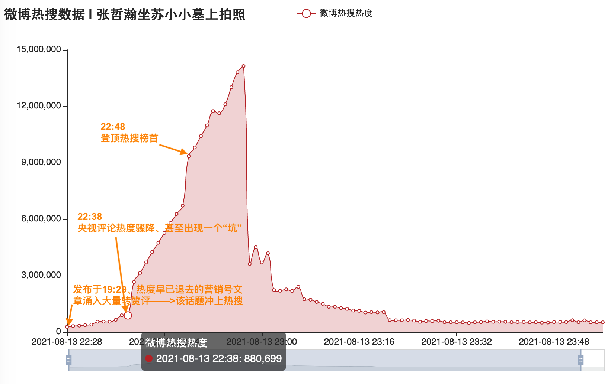

- TIPS: 移动端请下滑界面，会出现导航栏。左上角可进入目录和选择模版。
研究报告 | 微博评论中的水军异常流量分析
[!TIP|style:flat|label:Abstract] 编者采集了8月13日人民日报和央视新闻的评论区，希望从评论流量、评论内容和评论用户身份等多个角度对该微博中的异常现象进行分析。为构建此类舆情热点事件的baseline，编者还采集了另外两件娱乐圈相关的热点事件（吴某、李某）中评论的热度变化，用以对比和分析此事件中存在的异常流量现象。
营销号和水军不能代表真民意。 关于整治营销号和水军乱象，我们还有很长的路要走。
- 营销号乱象 —— 十几秒内发表百字评论
- 人民日报发布微博的15秒内，数个营销号发布多条百余字评论，占据热评高位，引导舆论走向。
- 某营销号甚至在第一分钟内，连续发表7条评论，总计近八百字"小作文"。
- 水军乱象 —— 微博每分钟评论量的异常
- 不同于baseline中的每分钟评论量的近似指数下降，人民日报评张相关微博的每分钟评论量在前一个小时始终居高不下，疑为水军控评冲击，直到人民日报删去「更要"补课"」字样。
- 央视新闻评张相关微博的每分钟评论量显著呈现多个不同阶段。
- 18:26--20:25，每分钟评论量呈现自然下降，并且其峰值和流量均远小于人民日报评张的微博。可能这才是真正的脱水数据。
- 20:25，该微博评论热度已退去，但相关词条却突然上了热搜，评论量急剧上升。(可能是买的，此为主观推测，无法证实)
- 21:17--22:38，新一波水军到达战场，热度再次骤升，并且从曲线中推测脱水后数据应与原评论量的自然下降保持一致。
- 22:38，该微博评论量骤减，甚至出现了一个"坑"。猜想为水军受到了新任务的吸引，而几乎同一时刻，#张哲瀚坐苏小小墓上拍照#热度开始迅速攀升。
- 水军乱象 —— 微博文本的异常(TODO)
- 人民日报评z的微博评论区中，每条评论的平均长度时刻显著高于baseline中的评论平均长度。
- 水军密集的地方，「封杀」、侮辱性词汇和不实信息的密集度明显增高，数据分布显著不同于常规路人发声。
- 水军乱象 —— 水军用户的分析(TODO)
- 可能出现一人多号、披皮黑等问题，查IP是最简单直接的解决方式，但这是平台才拥有的数据。处理此问题是否应为平台需要负担起的责任呢？如果想要调查相关事宜，是否应由平台向有关部门提交真实数据呢？
- 20211124发布：具体内容是一个通宵写出来的，一些数据和分析还未曾完善。其中粗糙的地方请指正。
- 20211126更新：添加摘要，更新图表，标记TODO。
- 20211231更新；添加苏小小热搜分析、恶意用户（职黑）社交网络构建方法。
一、数据来源
本报告采集了数十万微博评论数据，并对涉及的舆情热点进行异常流量分析。
数据特点有：
- 发布时间戳精确到秒；
- 样本覆盖率高；
- 分析粒度精确到分钟，如每分钟评论数、每分钟评论平均长度等；
- 注：评论数据不包含楼中楼。
数据来源为：可公开访问的微博评论，包括人民日报发表于8月13日16:39的微博、央视新闻发表于8月13日18:26的微博、人民日报于8月16日评吴某、8月21日评李某的微博，以下分别简称为微博A1、A2和B1、B2。以后两者作为热点舆情事件的baseline，对比可观测到我们所研究的A1和A2两条微博评论区中存在明显的异常流量现象，实质为营销号和水军联动制造的虚假舆情。
以微博A2和B1为例，采集到的数据分布与真实的数据分布图如下（拖动滑块可调整时间轴）：
二、分析内容
（一）前排热评中的营销号乱象
本节分析内容：在人民日报的微博A1发表前60秒中，存在的营销号异常评论现象。微博A1发表于16:39:58，被营销号迅速占据热评高位，受到大量水军控评冲击，最终编辑于17:14:27——删去了其中「更要"补课"」字样。
什么是假舆情假民意？什么是营销号乱象？
变量解释：下述表格中第一列floor_number为该评论是严格意义上的第几个评论，缺失值可能是对应评论已被删除。第二列diff_seconds为评论时间与微博发布时间之差，单位为秒。第三列created_at为评论发表的时间戳，精确到秒。第四列len_text为所发表评论的文本长度。第五列text为对应评论内容。第六列like_count为点赞数。第七列folloers_count为评论用户的粉丝数，大于一万者取整。
数个营销号在几秒之内复制粘贴大段文字，甚至不曾删去其中的复制标记
[/cp]？一个营销号一分钟内连续发布7条评论，总计近八百字小作文？
（二）时间线对比水军乱象
- A1人民日报：发博的第一个小时显著异常，评论热度始终不退。
- 正常的新闻每分钟评论量变化应当如B1（吴某）一样，呈现近似随时间指数递减的状态。
- 作为对比的baseline中，吴某与李某的评论热度呈现出了相同的衰减曲线。（李某曲线暂时未放）
- A1人民日报的评论量却呈现了一种异常状态，即每分钟评论数始终维持在高位，是水军进行不断评论冲击造成的。从发博的16:39到17:45，经过一个小时后，随着水军离场，热度才渐渐降下来，并且是近似线性而非指数下降。
- A2央视新闻：每分钟评论量曲线就更加异常，明显呈现出几个不同的阶段。
- 20:25之前，该微博的评论曲线同B1一样，呈现出正常的衰减。理论上，如果没有水军持续冲击的话，A1也应当服从这一规律。此外，注意到A2的峰值和流量都远小于A1，这可能才是所谓的脱水数据。
- 20:25，在该微博热度基本退去的时候，相关词条突然登上热搜，导致其评论数迅速增加。（编者个人主观质疑该热搜是买的）
- 21:17，该微博的每分钟评论量再次骤涨，新一波水军到达战场。我们注意到如下图虚线，如果没有这波水军的存在，是不是原有曲线应按照虚线所示平滑地进行衰减呢？
- 22:38，为何该新闻中的水军热度突然飞快退去，以至于出现了一个明显的"坑"？
- 初步猜想可能是由于一部分水军被新的任务吸引，于是编者check了当晚的热搜数据，发现几乎同一时刻#张哲瀚坐苏小小墓上拍照#热搜热度开始迅速攀升。
- 当日19:29，某营销号就已发布相关微博 https://m.weibo.cn/detail/4669815195959771 ，但是热度很低，评论不足300条。为什么突然这个微博得到大量热度，最终获得3万评论，成为该词条下热门？
- 关于时间线的猜测总结
- 22:28时，发布于19:29、热度早已退去的营销号文章突然开始得到大量水军转赞评。有人通过引导水军转赞评营销号微博、水军发布相关内容、刷搜索量等方式，将此话题冲上热搜榜。通过热搜时光机回溯，此时该热搜为热搜榜47位。
- 22:28至22:38，在水军的大力运作下，该话题从热搜榜第47位迅速上升至第11位。
- 22:38起，由于话题热度还不够"爆"，进一步加大投入力度，乃至央视评论区的水军撤出，转来冲击该话题热度。
- 从22:47到22:48，一分钟之内该话题热度骤升30w，在热搜数据图中拉出了一个陡峭的上升段，终于"成功"占据热搜榜首。
- 22:57，话题热度达到峰值，水军退去。此后，该话题热度迅速降低。
- 相关时段开始发帖、评论或者转赞的账号，可能大比例为水军账号。刷数据的人员可能有不止一个账号，因此未必与央视评论区账号相同，但是有关部门应当有条件获得这些账号的ip地址，可以判断出哪些账号为同一人使用。
- 


{kind=link}
{kind=link}
{kind=link}
{kind=link}
（三）文本分析对比水军话术
本节目前完成了基础分析，其余部分TODO。
- 人民日报评论的平均文本长度高于央视新闻中的评论长度，并且显著高于其他作为baseline的微博平均文本长度。（该数据需进一步处理）
- 波动较大的区域是由于评论样本量较少。一是到了深夜，二是如央视新闻于发博后60-120min时热度其实已经退去，每分钟评论数已小于100。真实评论和采样评论的分布图如第一节数据分布中所示。
- 采样率基本均高于80%，即如果该分钟有1000条评论至少采集到了800条。可以认为用采样到的评论来估计真实评论区的状态是有效的。
- 根据编者观察，人民日报下的水军话术明显带有【小作文】特点，也因此导致其文本长度显著不同于常规微博评论。
- 水军密集的地方，「封杀」、「退圈」及一些侮辱性词汇和不实信息的密集度明显增高，数据分布显著不同于常规路人发声。（TODO）
（四）水军用户分析(TODO)
因为可能出现一人多号、披皮黑等问题，查IP是最简单直接的解决方式，理论上真实数据应当由平台提交给国家相关部门进行处理。囿于条件，我们只能对每个账号进行分析。
是否为水军账户？
- 纯水军账户的判断相对容易，我们可以将互关数、沉寂关注数、发博频率、粉丝分布、转发关系等作为特征进行训练，得到正确率较高的水军判断模型。
- 如，纯水军账户一般很少有互关、存在大量僵尸粉、发博集中在某一时间段、粉丝分布及其分散、转发关系异常不存在好友互动。
- 相关特征工程及模型可以参考1。
兼职水军比较难以判断。
- 许多评论明显能看出来引导痕迹，但是确实不是廉价5毛一条的评论。
- 即使5元一条，10w条评论也才多少钱呢？却可以操控舆论风向，甚至倒逼官媒改口，这才是让资本掌控了话语权！
哪些是明显在人日下控评？
- 如果不能客观公正地参与事件讨论，而是挟私控评，就是极端思维对人行为的异化。
可以考虑的方向：
- 在没有ip信息的情况下，可以爬取人民日报8月份所有热门微博的评论，统计出用户池。进而对比出，冲击人民日报评论区的用户，是否大量都不曾评论过人民日报其他微博。
- 构建恶意用户、黑子的社交关系网以及互关关系网，可以发掘其中的团伙关系。
1. https://github.com/WxxShirley/WeiboSpammer ↩